class: center, middle # EE-463 STATIC POWER CONVERSION-I # 3-Phase Diode Rectifiers ## Ozan Keysan ## [keysan.me](http://keysan.me) ### Office: C-113 <span class="meta">•</span> Tel: 210 7586 --- ## 3-Phase Half Wave Rectifier -- ### N-Phase Generalized Form -- <p>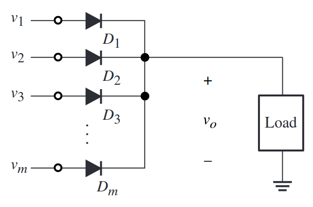</p> --- ## 3-Phase Half Wave Rectifier ## Voltage Waveforms <p>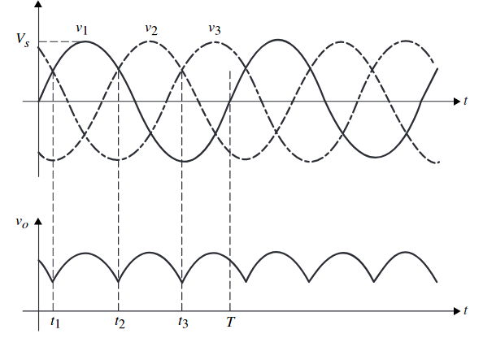</p> --- ## 3-Phase Half Wave Rectifier <p>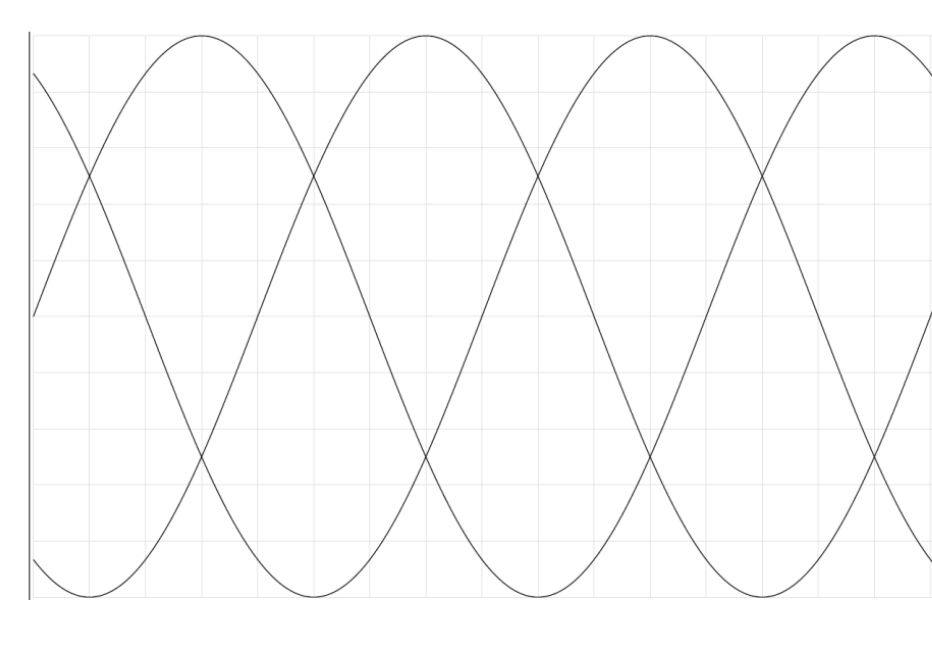</p> ## [Try Yourself](./interactive/three_phase_rectifier_explorer.html) --- ## 3-Phase Half Wave Rectifier ## Average Voltage? ## \\(V\_{dc}= \dfrac{3\sqrt{6}}{2 \pi} V\_{rms}\\) -- ### = 270 V for a 400V grid ### Comparison with the single phase rectifier? --- ## 3-Phase Half Wave Rectifier ## Disadvantages: - ### All current passes through the neutral line - ### DC current in transformer windings - ### A ripple of 163 V at 150 Hz --- ## 3-Phase Full Wave (Bridge) Rectifier ## also called 6-pulse rectifier <img src="http://2.bp.blogspot.com/-cumirN3mjC0/UiVln-LDtTI/AAAAAAAAALw/f9hwfKSzZb0/s640/3-Phase-Bridge-Rectifier1.jpg" alt="Drawing" style="width: 600px;"/> --- ## 3-Phase Full Wave (Bridge) Rectifier -- <p>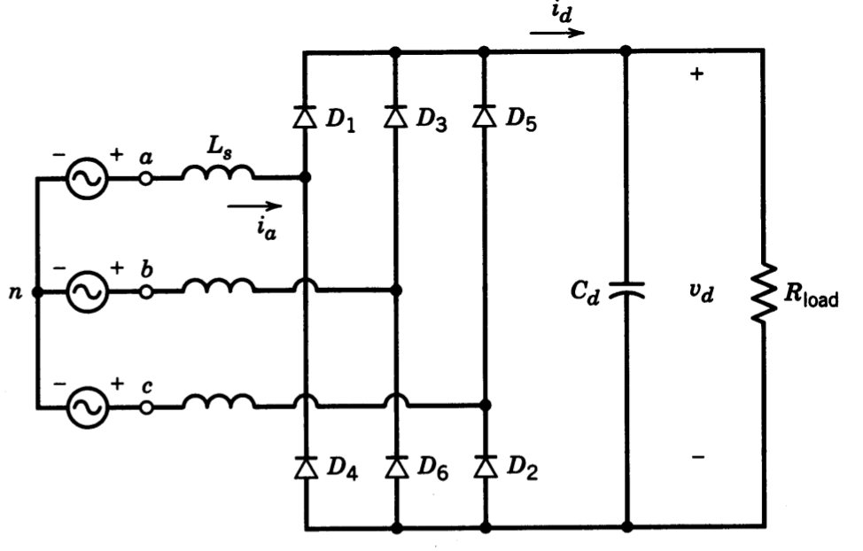</p> --- ## 3-Phase Full Wave (Bridge) Rectifier ### Ignore Ls and redraw -- <p>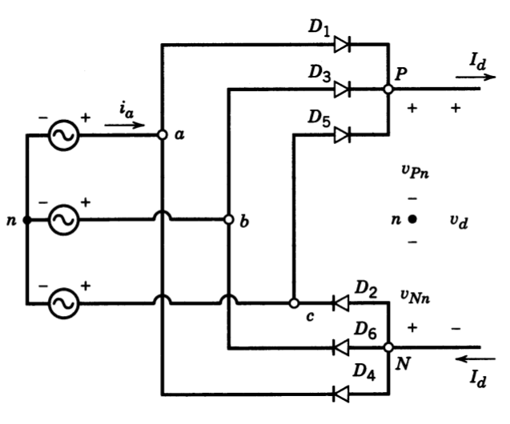</p> --- ## 3-Phase Full Wave (Bridge) Rectifier ### Can you draw the voltage and current waveforms? -- <p>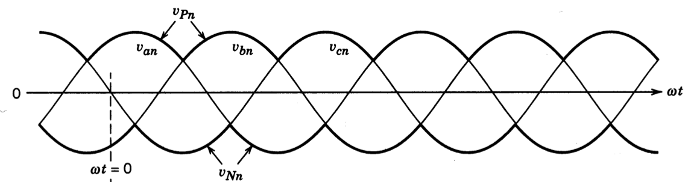</p> --- ## 3-Phase Full Wave (Bridge) Rectifier ### Can you draw the voltage and current waveforms? <p>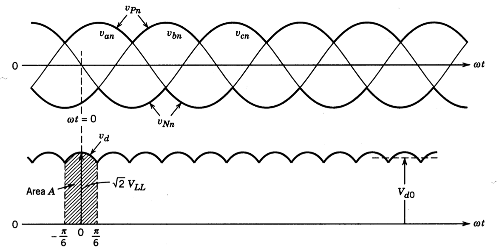</p> --- ## 3-Phase Full Wave (Bridge) Rectifier ## Average voltage? -- : Twice the half-wave rectifier value ## \\(V\_{dc}= \dfrac{3\sqrt{6}}{ \pi} V\_{ph}\\) ### or -- ## \\(V\_{dc}= \dfrac{3\sqrt{2}}{ \pi} V\_{l-l} = 1.35 V\_{l-l}\\) ### =540 Vdc for a 400 V grid --- ## 3-Phase Full Wave (Bridge) Rectifier ### Output voltage waveforms <p>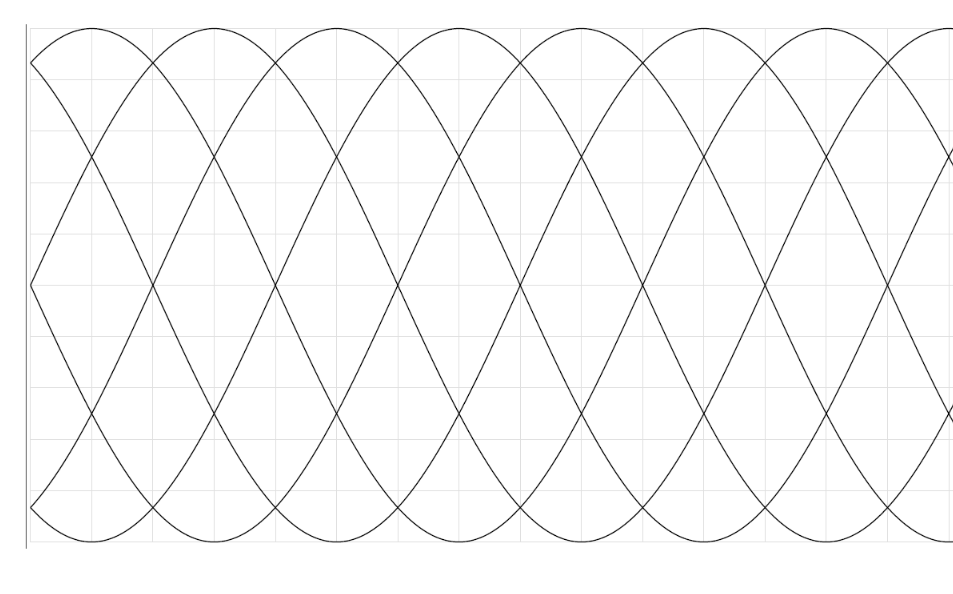</p> ## [Try Yourself](./interactive/three_phase_rectifier_explorer.html) --- <iframe src="interactive/three_phase_rectifier_explorer.html?embed" width="800" height="600" style="border:0"></iframe> --- ## What about the current waveforms? -- <p>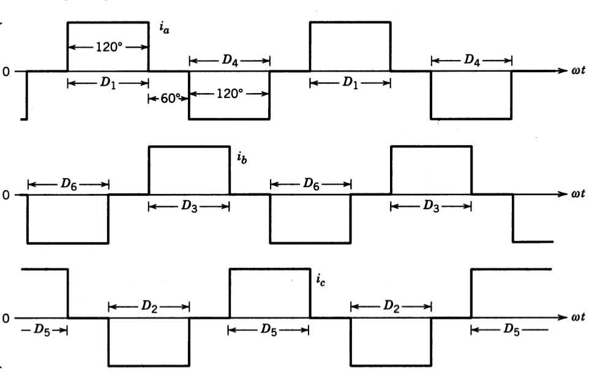</p> --- ## What about the current waveforms? ### What are the differences wrt single phase? -- <p>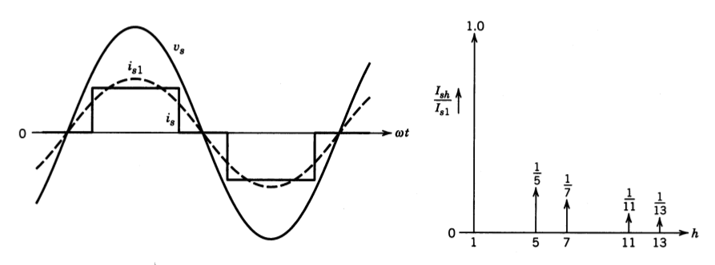</p> ### No 3rd order harmonics! ### Phase currents cancel each other, zero neutral line current. --- # Comparison of Rectifiers | Type | Vout | \\(\Delta\\)Vout | \\(f\_{ripple}\\) | |:---------------------:|:------:|:---------:|:---------:| | **Single Phase** | \\(\;\dfrac{2\sqrt{2}}{\pi}V\_{ph}\\) = 207 V | \\(\;\sqrt{2} V\_{ph} = 325 V\\) | 100 Hz | | **3-phase Half-wave** | \\(\;\dfrac{3\sqrt{2}}{2\pi}V\_{l-l}\\) = 270 V | \\(\;\dfrac{\sqrt{2}}{2} V\_{ph} = 162.5 V\\) | 150 Hz | | **3-phase Full Bridge** | \\(\;\dfrac{3\sqrt{2}}{\pi}V\_{l-l}\\) = 540 V | \\(\;( 1-\frac{\sqrt{3}}{2}) \sqrt{2}V\_{l-l} = 75.8 V\\) | 300 Hz | --- # Commutation in 3-Phase Rectifiers --- # Commutation in 3-Phase Rectifiers -- <p>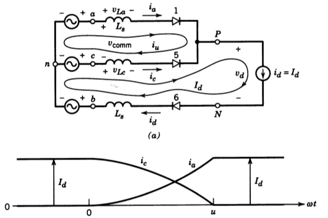</p> ## [Try Yourself](./interactive/three_phase_rectifier_explorer.html) --- # Commutation in 3-Phase Rectifiers -- <p>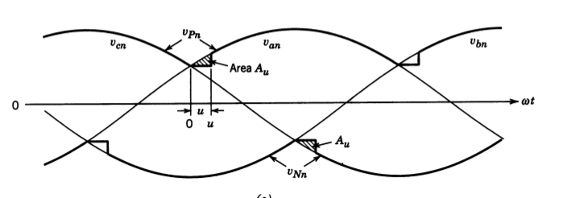</p> ## [Try Yourself](./interactive/three_phase_rectifier_explorer.html) --- ### Average Voltage ## Without Commutation ### \\(V\_{dc}= \dfrac{3\sqrt{2}}{ \pi} V\_{l-l} = 1.35 V\_{l-l}\\) -- ## With Commutation ### \\(V\_{dc}= \dfrac{3\sqrt{2}}{ \pi} V\_{l-l} - \dfrac{3}{\pi}\omega L_s I_d\\) ### [More info](http://www.ehu.eus/electronica-industrial/ElectronicaIndustrial_Automatica/apuntes/overlap1.pdf) ### [Try simulation with commutation](./interactive/three_phase_rectifier_explorer.html?Ls=2&Id=40) --- ## You can download this presentation from: [keysan.me/ee463](https://keysan.me/ee463)